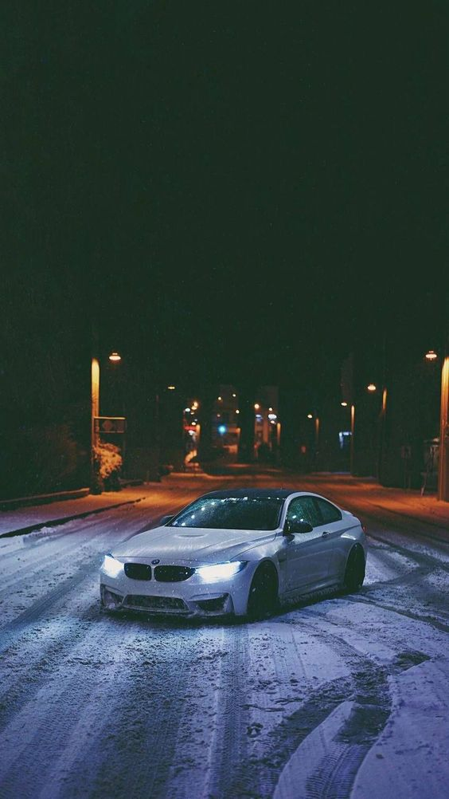
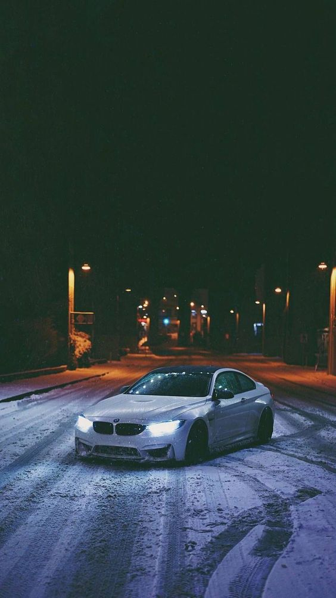

Gorila Sport - Home
2021.04.03 22:50

× Home News Kabar Gorila Jebool!!! Tahu kan Kamu ? Suara Gorila Tokoh Komik Cerkomber Kampung Gelong Komik Strip Starterpack Igor Mice TV Merchandise Gambar Kuy!! Subscribe Home News Kabar Gorila Jebool!!! Tahu kan Kamu ? Suara Gorila Tokoh Komik Cerkomber Kampung Gelong Komik Strip Starterpack Igor Mice TV Merchandise Gambar Kuy!! READ MORE Komik Strip Igor READ MORE Komik Strip Mice READ MORE Komik Strip READ MORE Komik Kampung Gelong READ MORE
Kutukan Arsenal dan Chelsea Berlanjut ke Liverpool
By Edi YuliLiverpool butuh perbaikan untuk mengatasi masalah di lini depan The Reds.
Alasan Ronaldo Gaya Kuncung hingga Akhirnya Minta Maaf
By Edi YuliRonaldo meminta maaf atas potongan rambutnya saat itu.
Read MoreAksi Terorisme Terjadi di Mabes Polri, NKRI Harga Mati
By Edi YuliPelaku penembakan itu ternyata perempuan.
Read MoreCerita Solskjaer Menolak Pemain dengan Rambut Mohawk
Ini dia syarat pemain versi Ole Gunnar Solskjaer. Read MoreCerita Solskjaer Menolak Pemain dengan Rambut Mohawk
4 Aktor Terbaik Brasil Nomor Punggung 10
Kok ga ada Zico, Pele, dan Rivellino. Read More4 Aktor Terbaik Brasil Nomor Punggung 10
5 Calon Tim yang bakal Diperkuat Sergio Aguero
Tim raksasa Eropa ini sangat ngotot mendapatkan Aguero. Read More5 Calon Tim yang bakal Diperkuat Sergio Aguero
Spanyol Nyaris Menangis, Skuad Garuda sudah Kehabisan Air Mata
PSSI berencana menjalani uji coba dengan tim kuat untuk memperbaiki kekurangan. Read MoreSpanyol Nyaris Menangis, Skuad Garuda sudah Kehabisan Air Mata
5 Pengganti Joachim Loew yang Siap ke Barcelona
Joachim Loew bakal melatih Barcelona dalam waktu dekat. Read More5 Pengganti Joachim Loew yang Siap ke Barcelona
Ambisi Besar Valentino Rossi di Balapan Tahun Ini
Sirkuit Mandalika masuk sebagai seri cadangan dalam MotoGP 2021. Read MoreAmbisi Besar Valentino Rossi di Balapan Tahun Ini
Menanti Debut Lord Ibra Bersama Blagult
Zlatan Ibrahimovic punya ambisi besar bersama Swedia. Read MoreMenanti Debut Lord Ibra Bersama Blagult
Mengintip Rekor Bintang Turki yang Lebih Unggul dari CR7
Hakan Calhanoglu turut serta mempermalukan Belanda. Read MoreMengintip Rekor Bintang Turki yang Lebih Unggul dari CR7
Salah Kirim Email, Choupo-Moting Gagal Bela Timnas
FECAFOOT melakukan blunder dalam pemanggilan Choupo-Moting. Read MoreSalah Kirim Email, Choupo-Moting Gagal Bela Timnas
Lovren: Apakah Liverpool Merindukan Saya?
Kehidupan Lovren justru tertantang bersama Zenit. Read MoreLovren: Apakah Liverpool Merindukan Saya?
Alasan Gladbach Pilih Xabi Alonso jadi Pelatih Kepala
Mengintip misi Gladbach bersama Alonso mulai musim depan. Read MoreAlasan Gladbach Pilih Xabi Alonso jadi Pelatih Kepala
Komentar Pelatih tentang Pertemuan para Raksasa
Pernyataan Thomas Tuchel tentang perempat final Liga Champions. Read MoreKomentar Pelatih tentang Pertemuan para Raksasa
Fakta di Balik Menghilangnya Akun Resmi All England
Akun Instagram All England tiba-tiba lenyap. Ada apa nih? Read MoreFakta di Balik Menghilangnya Akun Resmi All England
GORILA SPORT
Komik
Perpres Miras Dicabut, Ingat Pesan Orang Tua Nutrisi yang Penting untuk Menangkal Covid-19 Ini Dia Bahaya Smartphone yang Pengaruhi Kesehatan 5 Game yang Cocok Dimainkan Bersama Pacar Pemerintah Kasih Modal Usaha, UMKM Menjamur dengan Ide Gila Graphos Hadir Sebagai Solusi Media Inspiratif Komik Strip : Membangun Kepercayaan dengan Bersepeda Komik Strip Jenis Jenis Sepeda Komik Strip M Fadli Lebih Penting Gaya dibanding Kenyamanan Komik Strip Game PC TerFavorit Komik Strip Inspirasi : Suara dari Kejauhan Komik Strip Game Konsol Komik Strip Angkat Galon Komik Strip WFH (Wash From Home)Gorila TV
gorila x nussaWatch Now Goal of The Week by Gorila Sport | Erling Haaland | Borussia Dortmund
Watch Now Goal of The Week by Gorila Sport | Cho Jae-wan | Gangwon FC vs Seoul FC | K-League
Watch Now BEGO: Selamat datang kembali Bundesliga
Watch Now Best Moment by Gorila Sport | Zinedine Zidane vs Marco Materazzi
Watch Now BEGO: Kompetisi sepak bola bergulir lagi
Watch Now BEGO: Bosan karantina, banyak pemain Premier League kabur
Watch Now Player of The Week by Gorila Sport | Kaka
Watch Now BEGO: Refleksi ulang tahun PSSI ke-90
Watch Now David Beckham, Raja Tendangan Bebas dan Umpan Silang Inggris
Watch Now BEGO: Fakta tentang Serie A sebelum lockdown
Watch Now Player of The Week by Gorila Sport | Willian
Watch Now BEGO: Covid-19 bikin UEFA pusing
Watch Now Stay Strong Wander Luiz
Watch Now BEGO: Sejarah transfer pemain di sepak bola
Watch Now
Merchandise
Notes Alfaro Morata View
Tumbler Golden State Warriors View
E-TOll View
Kalender View
Golden State Warriors View
Juventus View
Basket View
" Victoria Concordia Crescit " -Gorila Sport
Submit Your Ideas Submit IdeasGambar Kuy
Krzysztof Piatek by @judha14 @sergioramos by @judha14 @malcomoliveira_97 by @iammbom @luissuarez9 @fcbarcelona by @nizarbenjamin Mbappe humiliated by @mamangfutbol #AlôMãe , vamos rumo ao Bicampeonato da Premier League !!! by @omeninodojdperii Persib Bandung Marcendise @iamzlatanibrahimovic_By_anasdz1908 @jorgelorenzo99_by_sopiandeni93 @jpcancelo _by_@khrisnusantara Tiger shot Kojiro HYUGA_by_zuh_rizal @riko.smnjuntak_by_@choirulanm @mosalah_by_@raimuraii_ s oke gorila_by_@headprotector timnas_by_@mas.ghif by_@mamangfutbol Frenkie de Jong_by_@abdul.khadir08 The New Star of Chelsea _by_@arissetyo By_@nepspeps Manchester United vs Liverpool at Old Trafford Stadium._By_sokiart_ @arynwilliams_28 _By_@kartunne.bonek By_@ffmsundiego77 @mahardhikaisme @lnjk_27 @ffmsundiego77 @aris.mada @aris.mada_2 @aris.mada3 @hdyf.xxlsize @mamangfutbol @choirulanm. @firminologic @anasdz1908 @awal.27 @apriwidif @firminologic_2 Gambar kuyy 24 Gambar Kuyy 25 @ayb.art Gambar Kuy Persib @blueboy.ig @comickampvng gambar_kuy moh salah @achmadzahier @danang_nih @azkymarwan @galangpanji__ Yuk Ikutaannn !!!! Redaksi | Pedoman Media | Karir | Info Iklan | Privacy Policy | Disclaimer © Copyright 2018 Gorila Sport Design By Slaemweb About Help Desk Privacy Policy- sport - IDN Times
- Disambar Petir, Pohon Tumbang Timpa Sport Hall dan Kenai ...
- Live Streaming beIN Sports 1 2 3 4 5 HD Nonton Bola TV ...
- Informasi Berita Seputar Tenis dan Bulutangkis Terbaru
- Gorila Sport - Home
- Okezone Sports : Info Berita MotoGp Terlengkap Di Indonesia
- Citilink Dukung Sport Tourism di 5 Destinasi Wisata ...
- Informasi Berita Seputar Olahraga Lainnya
- Suzuki Resmi Meluncurkan Motor Sport dengan Mesin Kecil ...
- Berapa harga Pajero Sport di pasar mobil bekas?
- sport - IDN Times
Jakarta (ANTARA) - Pajero Sport terbaru telah dikenalkan di pasar Indonesia dengan harga mulai Rp502 juta hingga Rp773,7 juta untuk varian termewah Dakar Ultimate 4x4 AT. Namun bagi Anda yang menginginkan sport utility vehicle (SUV) berbodi bongsor seperti Pajero, cobalah menengok pasar mobil bekas ...
- Disambar Petir, Pohon Tumbang Timpa Sport Hall dan Kenai ...
BeIN Sport – Sekarang channel BeIN sport 1, BeIN sport 2, BeIN sport 3, serta setelah itu telah ada di indonesia (BeIN Sport Indonesia), serta buat penduduk tanah air khsus penggemar bola kalian dapat melihat liputan sekitar bola seperti streaming bola di yalla shoot, agenda bola, laga bola serta klassemen, dapat dipandang di channel bein itu. . Menurut pengucapan managing director BeIN Asia ...
- Live Streaming beIN Sports 1 2 3 4 5 HD Nonton Bola TV ...
Berita sepakbola terbaru, live scores, hasil, rumor, transfer, jadwal, klasemen dan profil pemain dari seluruh dunia, termasuk Liga 1.
- Informasi Berita Seputar Tenis dan Bulutangkis Terbaru
sport. ALL; Soccer; Arena; Sport 31 Mar 21 | 22:21 5 Pemain Internasional Prancis U-21 dengan Banderol Tertinggi saat Ini. Sport 31 Mar 21 | 22:02 7 Pemain Termahal yang Dibeli Barcelona dari Klub Brasil. Sport 31 Mar 21 | 21:59 ...
- Gorila Sport - Home
Pengelola Sport Hall Ateh Ngarai, Irba Jaya mengatakan, pohon itu tumbang di saat hujan turun deras dan angin berembus kencang petang kemarin. Tiba-tiba, petir menghantam pohon besar yang ada di belakang bangunan GOR. “Sekitar jam 04.00 (sore) hujan. Datang petir kena pohon, itu yang roboh ke atap.
- Okezone Sports : Info Berita MotoGp Terlengkap Di Indonesia
SPORT LAIN Rabu 31 Maret 2021 22:17 WIB. Ketenaran Pevoli Cantik Sabina Altynbekova Sempat Bikin Khawatir. MOTOGP Kamis 01 April 2021 10:39 WIB. Terus Dibelit Masalah yang Sama, Valentino Rossi seperti Tak Belajar . berita terbaru MOTOGP. Francesco Bagnaia Kembali Bidik Hasil Maksimal di MotoGP Doha 2021.
- Citilink Dukung Sport Tourism di 5 Destinasi Wisata ...
Motor sport dengan mesin yang lebih kecil itu akan dipasarkan dalam dua varian yaitu GSX-R125 dan GSX-S125. Melansir Young-machine, Rabu (24/3), secara desain, GSX-R125 tidak ada berbeda jauh dibanding GSX-R150.
- Informasi Berita Seputar Olahraga Lainnya
Citilink Dukung Sport Tourism di 5 Destinasi Wisata Superprioritas Minggu, 28 Maret 2021 – 08:43 WIB Citilink menggelar rangkaian acara Hidup Sehat Series 2021 #DiIndonesiaAja#BarengCitilink di Mandalika.
- Suzuki Resmi Meluncurkan Motor Sport dengan Mesin Kecil ...
Komik Sport, Comic Sport, Komik Olaharaga, Berita Olahraga, Komik Berita Olaharaga,
- Berapa harga Pajero Sport di pasar mobil bekas?
Informasi berita terbaru seputar tenis dan bulutangkis seperti profil pemain, hasil pertandingan, info turnamen dan lainnya.
Jakarta (ANTARA) - Pajero Sport terbaru telah dikenalkan di pasar Indonesia dengan harga mulai Rp502 juta hingga Rp773,7 juta untuk varian termewah Dakar Ultimate 4x4 AT. Namun bagi Anda yang menginginkan sport utility vehicle (SUV) berbodi bongsor seperti Pajero, cobalah menengok pasar mobil bekas ...
BeIN Sport – Sekarang channel BeIN sport 1, BeIN sport 2, BeIN sport 3, serta setelah itu telah ada di indonesia (BeIN Sport Indonesia), serta buat penduduk tanah air khsus penggemar bola kalian dapat melihat liputan sekitar bola seperti streaming bola di yalla shoot, agenda bola, laga bola serta klassemen, dapat dipandang di channel bein itu. . Menurut pengucapan managing director BeIN Asia ...
Berita sepakbola terbaru, live scores, hasil, rumor, transfer, jadwal, klasemen dan profil pemain dari seluruh dunia, termasuk Liga 1.
sport. ALL; Soccer; Arena; Sport 31 Mar 21 | 22:21 5 Pemain Internasional Prancis U-21 dengan Banderol Tertinggi saat Ini. Sport 31 Mar 21 | 22:02 7 Pemain Termahal yang Dibeli Barcelona dari Klub Brasil. Sport 31 Mar 21 | 21:59 ...
Pengelola Sport Hall Ateh Ngarai, Irba Jaya mengatakan, pohon itu tumbang di saat hujan turun deras dan angin berembus kencang petang kemarin. Tiba-tiba, petir menghantam pohon besar yang ada di belakang bangunan GOR. “Sekitar jam 04.00 (sore) hujan. Datang petir kena pohon, itu yang roboh ke atap.
SPORT LAIN Rabu 31 Maret 2021 22:17 WIB. Ketenaran Pevoli Cantik Sabina Altynbekova Sempat Bikin Khawatir. MOTOGP Kamis 01 April 2021 10:39 WIB. Terus Dibelit Masalah yang Sama, Valentino Rossi seperti Tak Belajar . berita terbaru MOTOGP. Francesco Bagnaia Kembali Bidik Hasil Maksimal di MotoGP Doha 2021.
Motor sport dengan mesin yang lebih kecil itu akan dipasarkan dalam dua varian yaitu GSX-R125 dan GSX-S125. Melansir Young-machine, Rabu (24/3), secara desain, GSX-R125 tidak ada berbeda jauh dibanding GSX-R150.
Citilink Dukung Sport Tourism di 5 Destinasi Wisata Superprioritas Minggu, 28 Maret 2021 – 08:43 WIB Citilink menggelar rangkaian acara Hidup Sehat Series 2021 #DiIndonesiaAja#BarengCitilink di Mandalika.
Komik Sport, Comic Sport, Komik Olaharaga, Berita Olahraga, Komik Berita Olaharaga,
Informasi berita terbaru seputar tenis dan bulutangkis seperti profil pemain, hasil pertandingan, info turnamen dan lainnya.
 
